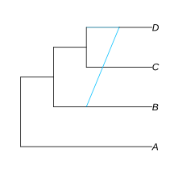
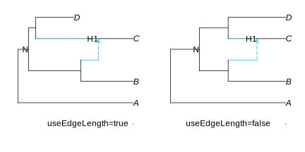
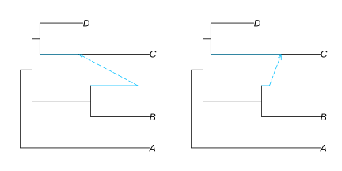
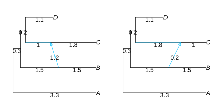

Better edges
Different hybrid edge styles
We can use the style option to visualize minor hybrid edges as simple lines, unlike the icytree style visualization. style is by default :fulltree, but by switching it to :majortree, we can draw minor hybrid edges as diagonal lines.
plot(net, :R, style=:majortree);
Using edge lengths
We can use useEdgeLength=true to draw a plot that uses the network's edge lengths to determine the lengths of the lines. For this, we'll use a network that has branch lengths:
net = readTopology("(A:3.3,((B:1.5,#H1:0.5):1.5,((C:1)#H1:1.8,D:1.1):.2):0.3);")
I used a DataFrame to add labels to the plot. For more on this, see the Adding labels section.
If branch lengths represent time, D could represent a fossil, or a virus strain sequenced a year before the others. Seeing this visually is the advantage of useEdgeLengths=true
This network happens to be time consistent, because the distance along the time (x) axis from node N to the hybrid node H1 is the same both ways.
A network is time-consistent if all the paths between 2 given nodes all have the same length. Time inconsistency can occur when branch lengths are not measured in calendar time, such as if branch lengths are in substitutions per site (some paths might evolve with more substitutions than others), or in number of generations (some lineages might have 1 generation per year, others more or fewer generations per year), or in coalescent units (number of generations / effective population size).
A time-consistent network may be ultrametric (the distance between the root and the tips is the same across all tips), or not like the network above.
Time inconsistent networks like these ones below might cause confusion:
net1 = readTopology("(A:3.3,((B:1.5,#H1:1.2):1.5,((C:1.8)#H1:1,D:1.1):.2):0.3);");
net2 = readTopology("(A:3.3,((B:1.5,#H1:0.2):1.5,((C:1)#H1:1.8,D:1.1):.2):0.3);");
It may be useful to consider using style=:majortree if it causes too much confusion, since the :majortree style doesn't visually represent minor edge lengths. Because of this, I used the showEdgeLength=true option to see the information anyway.
R"layout"([1 2])
plot(net1, :R, useEdgeLength=true, style = :majortree, showEdgeLength=true, arrowlen=0.1);
plot(net2, :R, useEdgeLength=true, style = :majortree, showEdgeLength=true, arrowlen=0.1);
I also used the arrowlen=0.1 option to show the arrow tips to show the direction of minor edges, which are hidden by default when using the style=:majortree option.